Ring of Monsters
Monster leben in Ringen.
Champions entstehen in Arenen.
Harry Potter trifft Pokémon, in einer Welt umgeben von Nebel.
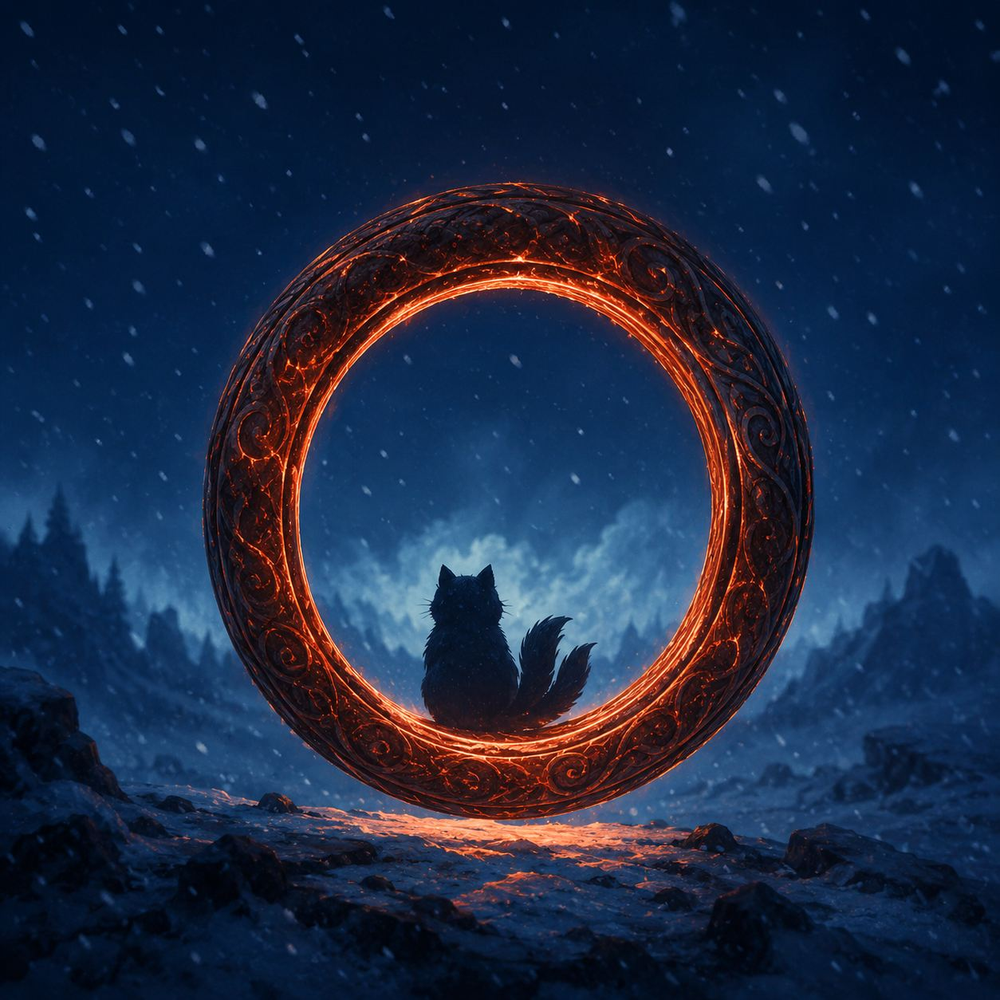
Bestiarium von Giara
Welches Monster rufst du?
-
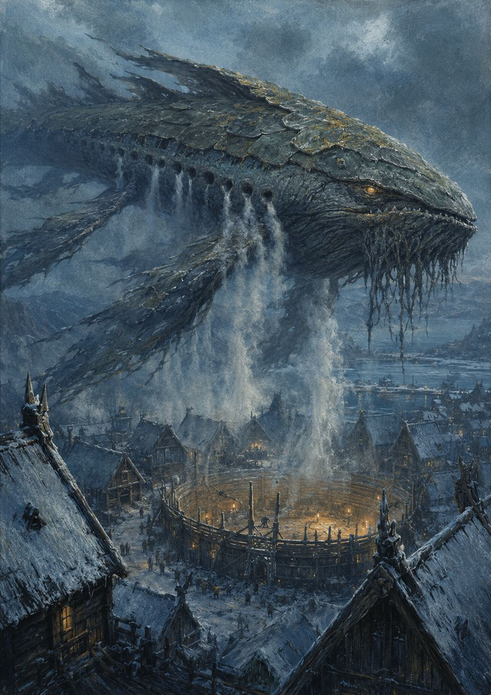
Leviathan
Windring · Stufe 7
Eine Beschwörerin rief ihn außerhalb der Arena aus dem Ring, nur um zu sehen, ob sie es kann. Er hing über Norhol Kull wie ein Wal am Himmel und atmete. Ihr KAI reichte für zehn Atemzüge.
-
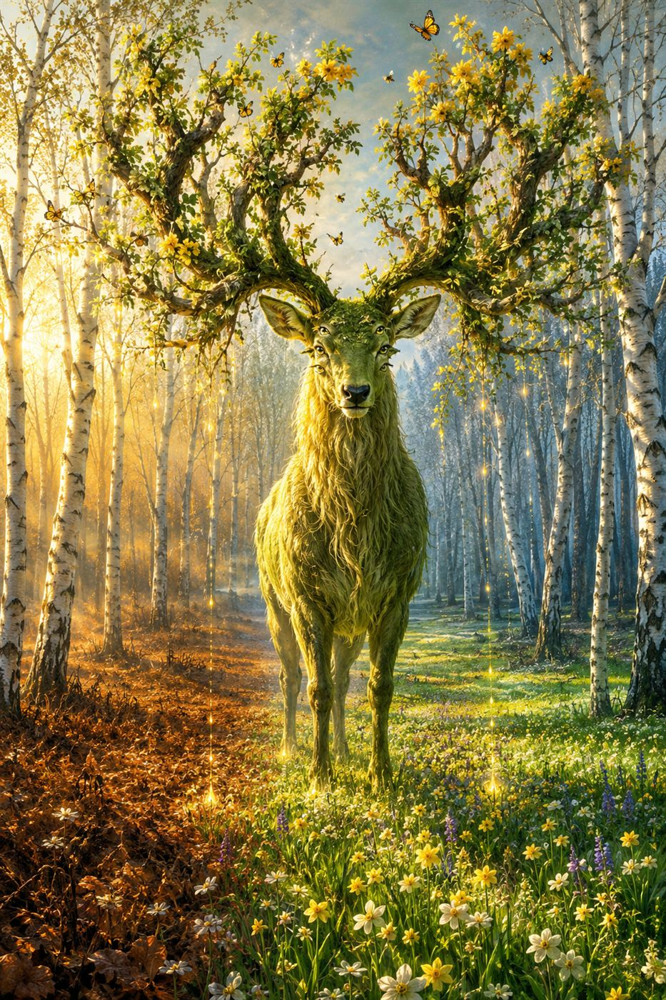
Eikthyrnir
Lebensring · Stufe 5
Ein Beschwörer ruft ihn auf ein totes Feld, und wo der leuchtende Tau von seinem Geweih tropft, schießt das Gras aus dem Boden. Danach liegt der Beschwörer zwei Tage im Bett.
-
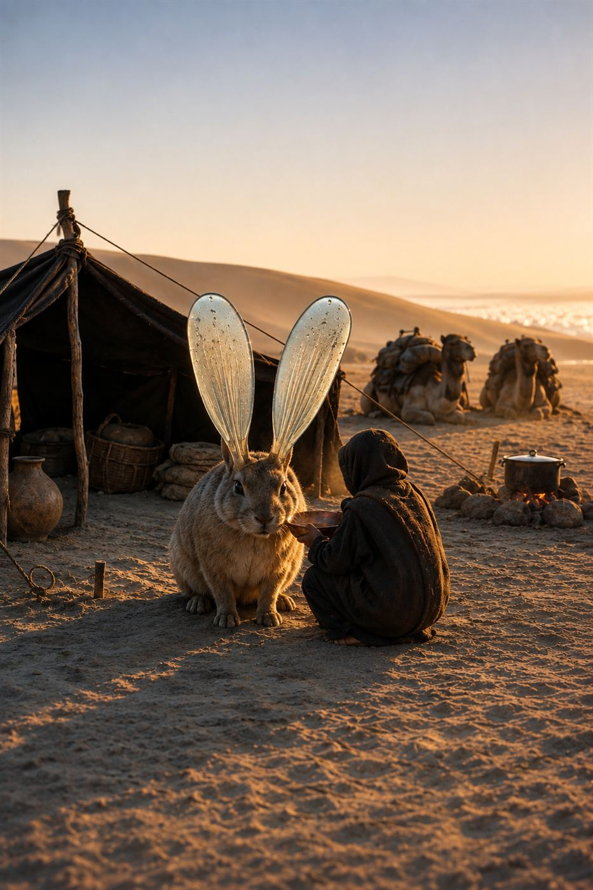
Taulöffel
Windring · Stufe 1
Wer ihn in der Wüste aus dem Ring holt, bekommt Wasser: Über Nacht füllen sich seine Ohren aus Glas. Am Morgen geht er zurück in den Ring, und sein Beschwörer ist ein bisschen dünner.
-
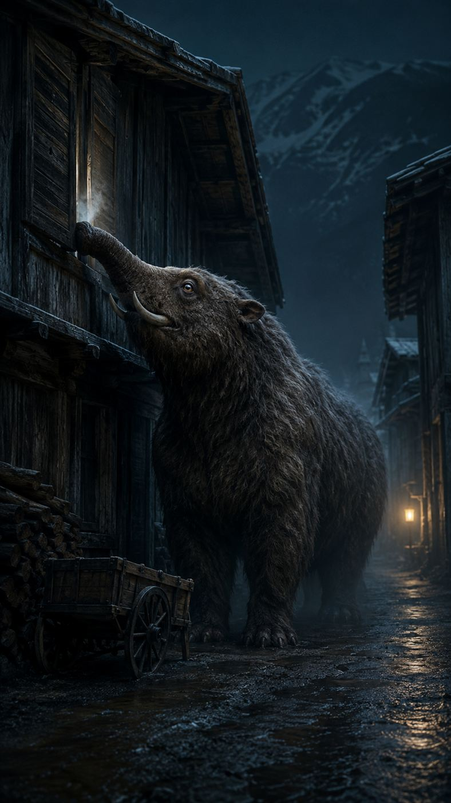
Baku
Erdring · Stufe 4
Sein Beschwörer ruft ihn nachts an das Fenster eines Kindes, und er trinkt die Albträume durch den Spalt. Was er davon zurück in den Ring trägt, weiß niemand.
-
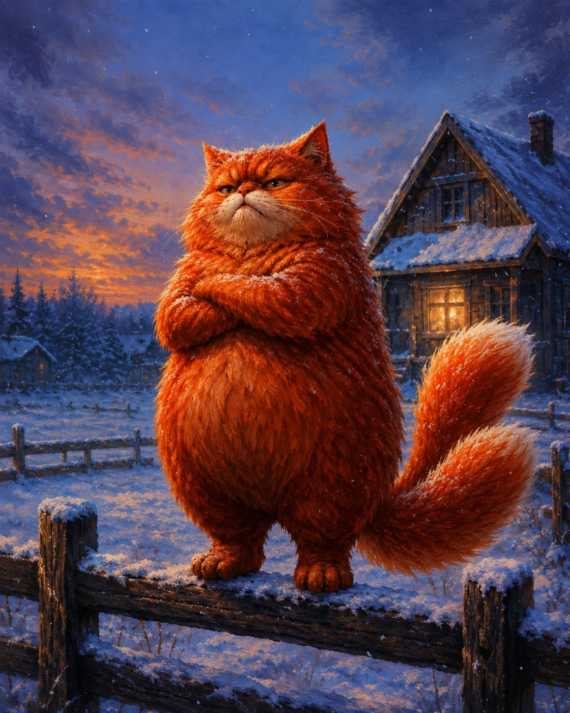
Neko
Ausdrücklich keine Katze
Feuerrot, rund wie ein frischer Brotlaib und gründlich beleidigt, sobald ihn jemand eine Katze nennt. Kommt nur aus dem Ring, wenn man ihn ruft, und geht nicht zurück, bevor er recht bekommen hat.
-
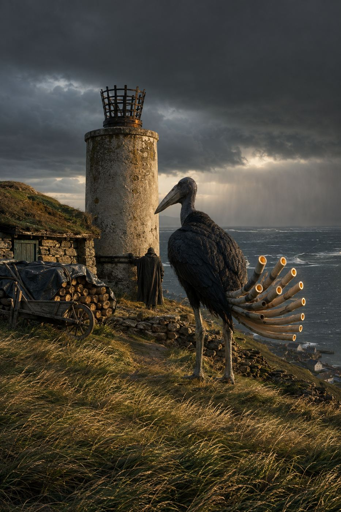
Wetterorgel
Windring · Stufe 2
Ruft man sie aus dem Ring, brummen ihre elf Hornröhren, lange bevor der Sturm am Himmel steht. Die Fischer in der Bucht zahlen ihren Beschwörer dafür, dass er sie jeden Morgen einmal ruft.
-
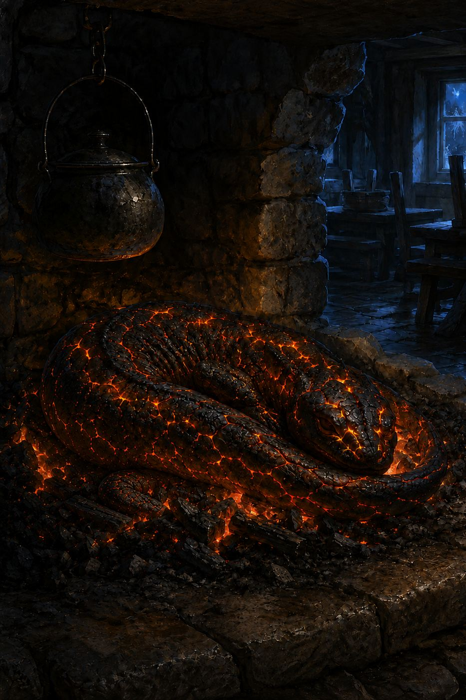
Glutschläfer
Feuerring · Stufe 3
Ein Wirt ruft ihn jeden Winter in den Herd, und solange sein KAI hält, geht das Feuer nicht aus. Wie viel ihn das kostet, sieht man im Frühling an seinem Gesicht.
-
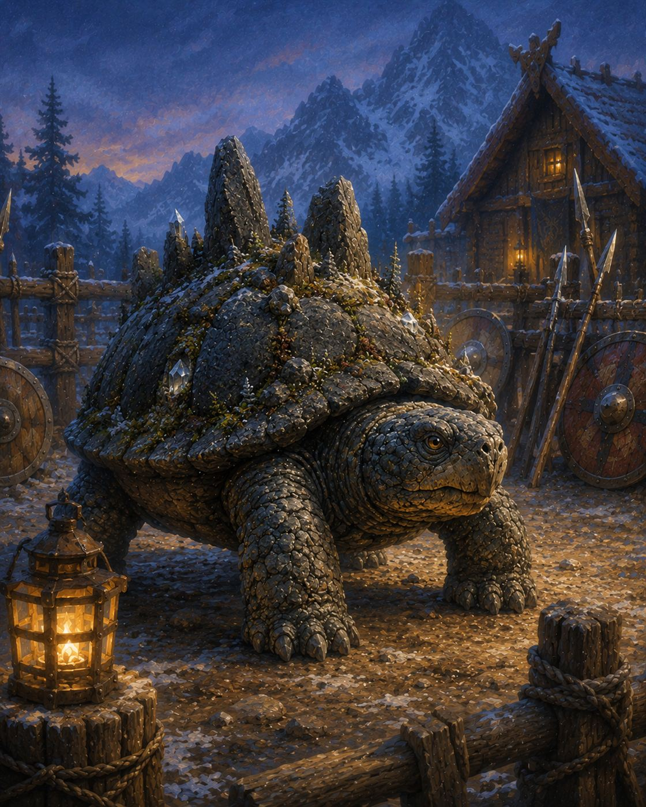
Kurma
Riesenschildkröte
Wer sie aus dem Ring ruft, holt einen Hügel aus Moos, Tannen und Stein auf das Feld. Sie blinzelt einmal, und ihr Beschwörer muss sich setzen.
-
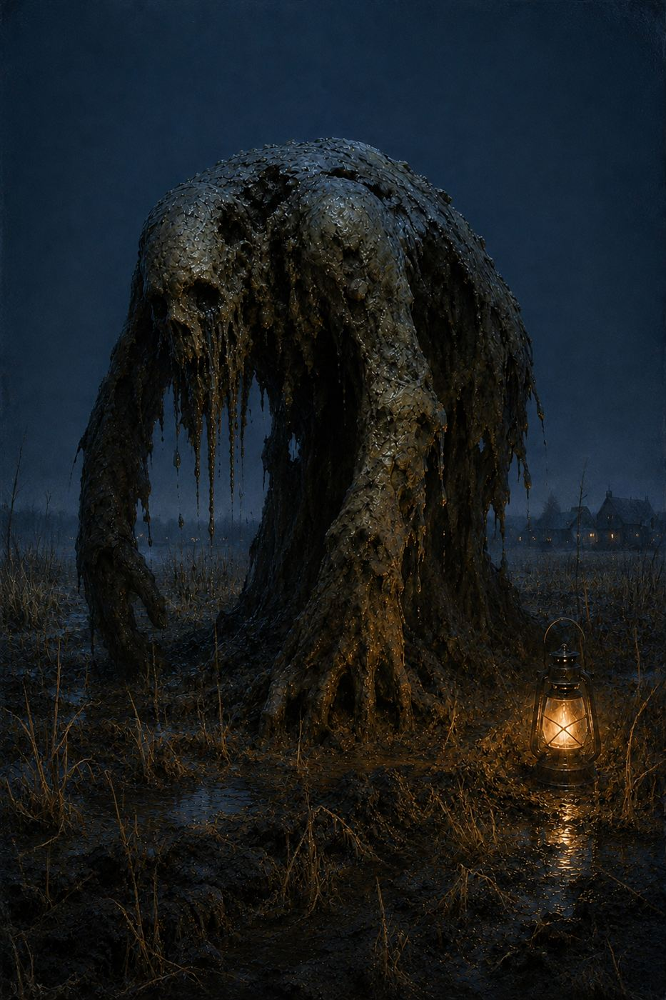
Golem
Erdring · Stufe 2
Sein Beschwörer ruft ihn nachts, und er gräbt stumm die Gräben. Dabei versucht sein Schlammgesicht, das Gesicht seines Beschwörers nachzumachen. Je länger die Nacht, desto besser gelingt es.
-
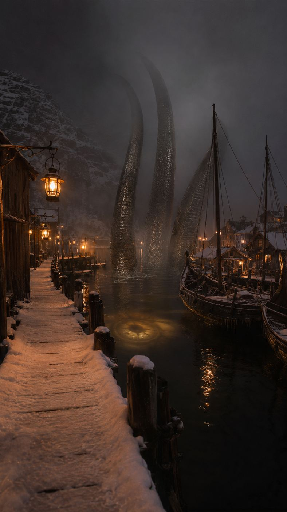
Kraken
Wasserring · Stufe 8
Stufe 8. Ein Beschwörer rief ihn einmal im Hafen, und man sah nur Arme, höher als die Masten, und tief unten ein Auge wie eine versunkene Laterne. Den Beschwörer hat man nie gefunden.
Die neun Ringklassen
Welcher Ring passt zu dir?
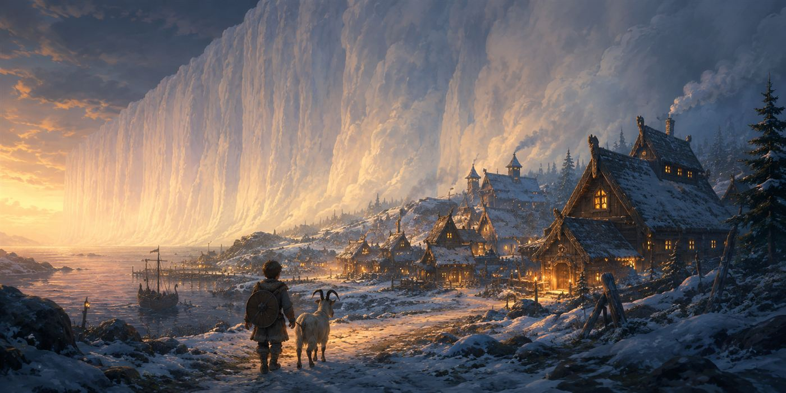
Die Welt
Giara
Um ganz Giara herum steht der Schleier, eine Wand aus Nebel, die sich auch beim stärksten Sturm keinen Fingerbreit bewegt. Wo er den Boden berührt, wächst nichts, und wer hineingeht, kommt nicht wieder heraus.
Darum geht niemand gern in die Nähe des Schleiers.
In den Ringen leben Monster, die Albmare. Wer einen ruft, ist Beschwörer, und jeder Albmar trinkt dabei von der Kraft dessen, der ihn gerufen hat, so lange, bis einer von beiden die Verbindung kappt. Gekämpft wird in der Arena. Außerhalb ist das Beschwören streng verboten, woran sich selbstverständlich alle halten.
Die sechs Städte
Fahr mit der Maus über eine Stadt. Auf dem Handy tippst du sie an, und noch einmal Tippen fährt wieder hinaus.
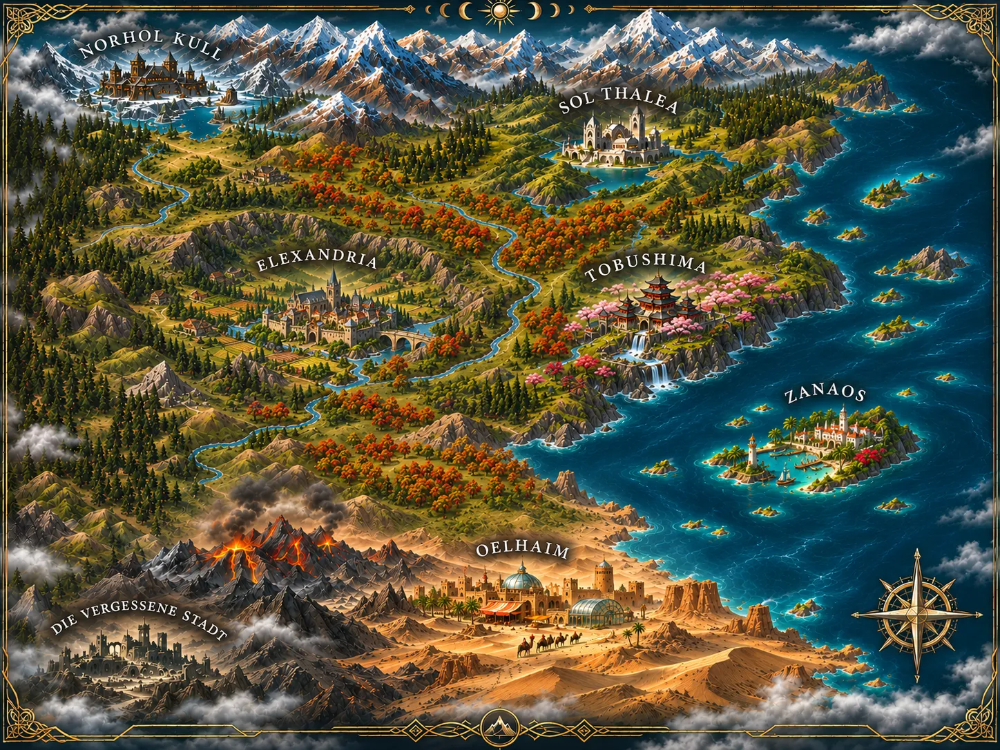
Norhol Kull
Eisberge, Met, Pelzmäntel und genau ein Langhaus. Nicht zwei. Eins.
Sol Thalea
Die Hauptstadt mit dem schönsten Stadion der Welt. Einmal im Jahr wird hier das Finale ausgetragen.
Elexandria
Die Handelsstadt wächst nicht in die Höhe, sondern Stockwerk um Stockwerk in die Erde hinein.
Tobushima
Ein Kaiserpalast auf der Klippe, Wasserfälle und eine Schmiede, die Ringe in Schwerter fasst.
Zanaos
Die Inselstadt mit dem größten Hafen, und auf den Nachbarinseln wohnen Leute, denen man besser nichts leiht.
Oelhaim
Lehmziegel, eine Wüste ohne Ende und Werkstätten, aus denen es schon raucht.
Die Vergessene Stadt
Hier landet, wer sonst nirgends mehr hin darf. Turniere gibt es keine, Besuch auch nicht so gern.
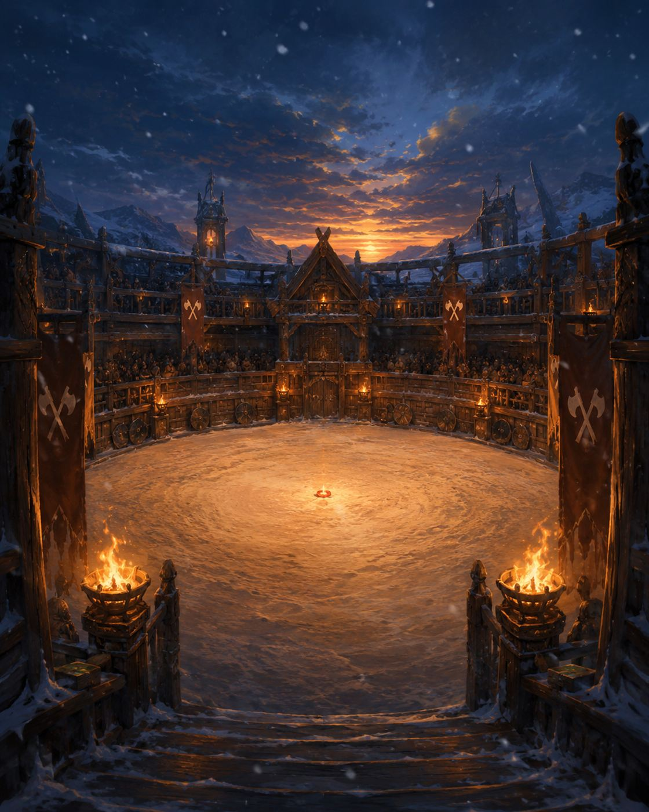
Das Buch
Der Roman zu Ring of Monsters.
Ein Bauernjunge mit einem „nutzlosen“ Ring schwört, das größte Turnier der Welt zu gewinnen, um seinen Vater zu retten.
Denn sein Vater ist krank, und zwar nicht auf die Art, die man mit Tee und Bettruhe wegbekommt. Er schläft und schläft, und auf seiner Haut wächst Moos. Heilen kann das niemand. Vermutlich nur der Wunschring, und einen Wunsch bekommt allein, wer in Sol Thalea das Finale gewinnt.
„Anders. Ja. Das ist das Wort.“
Hannek, der zweitbeste Ringschmied von Norhol Kull, über den nutzlosen Ring
Patreon
Komm mit nach Giara.
Auf Patreon erscheinen Geschichten aus Giara, neue Monster und Blicke hinter die Kulissen, und manches davon gibt es nirgendwo sonst. Folgen kostet nichts.
Zu Patreon